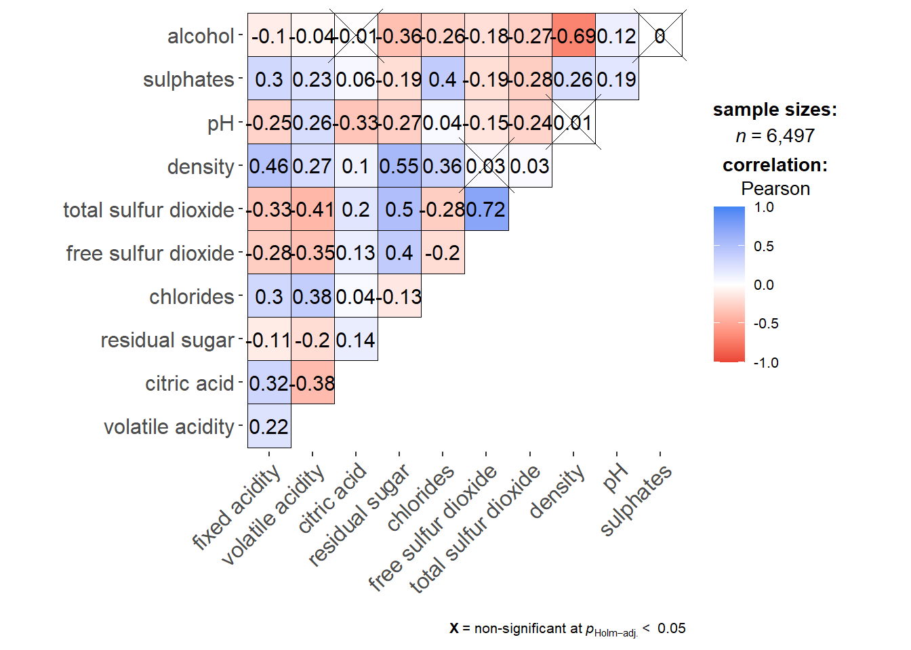
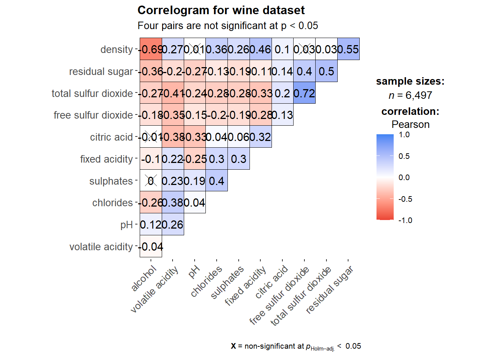
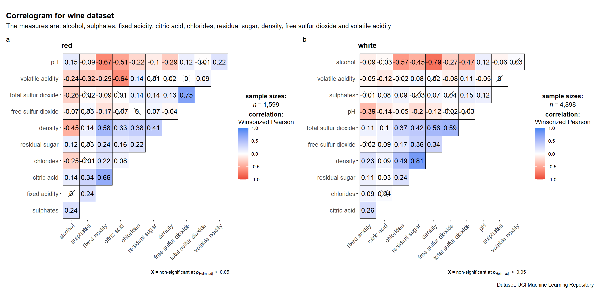

pacman::p_load(corrplot, ggstatsplot, tidyverse, knitr)Chapter 6: Visual Correlation Analysis
Hands-on Exercise 5
6 Visual Correlation Analysis
6.1 Overview
This chapter covers how to visualise pairwise correlations across many variables at once, using three approaches: a scatterplot matrix with pairs(), a corrgram with ggcorrmat() from the ggstatsplot package, and a corrgram with corrplot() that supports the widest range of glyphs and reordering algorithms.
6.2 Installing and Launching R Packages
Three packages drive this chapter:
- corrplot for purpose-built corrgrams
- ggstatsplot for statistically annotated correlation matrices in
ggplot2style - tidyverse for data import and manipulation
knitr is also loaded so kable() can produce clean previews of the data.
6.3 Importing and Preparing the Data Set
6.3.1 Importing Data
The Wine Quality Data Set comes from the UCI Machine Learning Repository. It combines red and white wine samples, has 13 variables, and 6,497 observations.
wine <- read_csv("data/wine_quality.csv")
kable(head(wine))| fixed acidity | volatile acidity | citric acid | residual sugar | chlorides | free sulfur dioxide | total sulfur dioxide | density | pH | sulphates | alcohol | quality | type |
|---|---|---|---|---|---|---|---|---|---|---|---|---|
| 7.4 | 0.70 | 0.00 | 1.9 | 0.076 | 11 | 34 | 0.9978 | 3.51 | 0.56 | 9.4 | 5 | red |
| 7.8 | 0.88 | 0.00 | 2.6 | 0.098 | 25 | 67 | 0.9968 | 3.20 | 0.68 | 9.8 | 5 | red |
| 7.8 | 0.76 | 0.04 | 2.3 | 0.092 | 15 | 54 | 0.9970 | 3.26 | 0.65 | 9.8 | 5 | red |
| 11.2 | 0.28 | 0.56 | 1.9 | 0.075 | 17 | 60 | 0.9980 | 3.16 | 0.58 | 9.8 | 6 | red |
| 7.4 | 0.70 | 0.00 | 1.9 | 0.076 | 11 | 34 | 0.9978 | 3.51 | 0.56 | 9.4 | 5 | red |
| 7.4 | 0.66 | 0.00 | 1.8 | 0.075 | 13 | 40 | 0.9978 | 3.51 | 0.56 | 9.4 | 5 | red |
6.4 Building Correlation Matrix: pairs() Method
6.4.1 Building a Basic Correlation Matrix
pairs() produces a scatterplot matrix where each off-diagonal cell shows the bivariate scatter for one pair of variables. With 11 numeric variables the result is an 11 by 11 grid.

pairs(wine[, 2:12])
NoteThings to learn from the code chunk above
pairs() accepts any matrix or data frame of numeric columns. Passing columns 2 to 12 of wine excludes the row index and target variables. The diagonal carries the variable names and the off-diagonal cells show all pairwise scatters. The matrix is symmetric, so the upper and lower triangles are mirrors of each other.
TipReading the plot
The dense black clouds are the headline result. With 6,497 observations the individual points become impossible to discern, and most cells collapse into solid blobs. This is the overplotting failure mode, meaning so many points stack on top of each other that no shape is visible. A scatterplot matrix would work better on a much smaller subset, since at this sample size summarising correlations as colour-encoded glyphs becomes essential. That is what the corrgram approach in the later sections does.
6.4.2 Drawing the Lower Corner
Because the correlation matrix is symmetric, showing both halves wastes space. Setting upper.panel = NULL removes the upper triangle.

pairs(wine[, 2:12], upper.panel = NULL)
NoteThings to learn from the code chunk above
upper.panel = NULL strips the upper triangle. Lower-triangle scatterplots are read along the row, with the diagonal label naming the y-variable.
6.4.3 Including Correlation Coefficients
A more useful variant places the numeric correlation in one triangle and the scatters in the other. The custom panel.cor function below sizes the text proportionally to the correlation magnitude.

panel.cor <- function(x, y, digits = 2, prefix = "", cex.cor, ...) {
usr <- par("usr")
on.exit(par(usr))
par(usr = c(0, 1, 0, 1))
r <- abs(cor(x, y, use = "complete.obs"))
txt <- format(c(r, 0.123456789), digits = digits)[1]
txt <- paste(prefix, txt, sep = "")
if (missing(cex.cor)) cex.cor <- 0.8 / strwidth(txt)
text(0.5, 0.5, txt, cex = cex.cor * (1 + r) / 2)
}
pairs(wine[, 2:12], upper.panel = panel.cor)
NoteThings to learn from the code chunk above
panel.cor is a custom function passed as the upper-panel renderer. It computes the absolute correlation, writes it as text, and scales the size by the magnitude so stronger correlations appear in bigger text. The use = "complete.obs" argument tells cor() to drop rows with missing values pairwise, which is a useful default to keep even though the wine data has no missing values.
TipReading the plot
The combined view is more useful than either panel alone. The lower triangle preserves the data shape, including curvature and outliers, which a single number cannot convey. The upper triangle gives the precise summary statistic. The largest text reveals the strongest relationships, drawing the eye directly to the analytically interesting pairs without forcing any number-reading first.
6.5 Visualising Correlation Matrix: ggcorrmat()
pairs() struggles at this sample size because of overplotting. A corrgram replaces each cell with a colour glyph encoding the correlation, which scales well to thousands of observations.
6.5.1 The Basic Plot
ggcorrmat() from ggstatsplot produces a corrgram with an integrated statistical report covering sample size, hypothesis test, and confidence intervals.

ggstatsplot::ggcorrmat(
data = wine,
cor.vars = 1:11
)
NoteThings to learn from the code chunk above
cor.vars = 1:11 selects the columns over which pairwise correlations are computed. The default output annotates non-significant pairs with a cross. Blue means positive correlation, red means negative, and saturation encodes magnitude.
The next variant adds hierarchical clustering reordering and a custom title.

ggstatsplot::ggcorrmat(
data = wine,
cor.vars = 1:11,
ggcorrplot.args = list(outline.color = "black",
hc.order = TRUE,
tl.cex = 10),
title = "Correlogram for wine dataset",
subtitle = "Four pairs are not significant at p < 0.05"
)
NoteThings to learn from the code chunk above
hc.order = TRUE reorders rows and columns by hierarchical clustering, so similar variables end up adjacent. outline.color = "black" adds a thin border around each cell. tl.cex = 10 controls the text label size.
TipReading the plot
After clustering, three variable groups emerge. The acidity-related measures (fixed acidity, volatile acidity, citric acid, pH) cluster together. Sugar and alcohol-related measures form another group. The sulphur dioxide measures form the third. This structure is invisible in the unordered version.
6.6 Building Multiple Plots
grouped_ggcorrmat() produces faceted corrgrams, useful when the correlation structure may differ across groups.
grouped_ggcorrmat(
data = wine,
cor.vars = 1:11,
grouping.var = type,
type = "robust",
p.adjust.method = "holm",
plotgrid.args = list(ncol = 2),
ggcorrplot.args = list(outline.color = "black",
hc.order = TRUE,
tl.cex = 10),
annotation.args = list(
tag_levels = "a",
title = "Correlogram for wine dataset",
subtitle = "The measures are: alcohol, sulphates, fixed acidity, citric acid, chlorides, residual sugar, density, free sulfur dioxide and volatile acidity",
caption = "Dataset: UCI Machine Learning Repository"
)
)
NoteThings to learn from the code chunk above
grouping.var = type splits the data into red and white wines and produces one corrgram per group. type = "robust" uses a percentage bend correlation, which is less sensitive to outliers than Pearson’s coefficient. p.adjust.method = "holm" corrects p-values for multiple testing across the matrix.
TipReading the plot
Comparing the two panels shows whether red and white wines share the same correlation structure or differ chemically. Differences in cell colour or saturation between the two panels indicate type-specific relationships, which the pooled corrgram from earlier would have hidden.
6.7 Visualising Correlation Matrix using corrplot
The corrplot package offers extensive customisation, with seven glyph types, three layouts, and four reordering algorithms.
6.7.1 Getting Started with corrplot
The first step is to compute the correlation matrix explicitly using cor().

wine.cor <- cor(wine[, 1:11])
corrplot(wine.cor)
NoteThings to learn from the code chunk above
The default glyph is a circle, with size and colour saturation encoding correlation magnitude. The default colour scheme is diverging blue-red, with blue for positive and red for negative correlations.
6.7.2 Working with Visual Geometrics
corrplot supports seven glyph types via the method argument: circle, square, ellipse, number, shade, color, and pie.

corrplot(wine.cor, method = "ellipse")
NoteThings to learn from the code chunk above
method = "ellipse" replaces circles with ellipses. A thin elongated ellipse pointing up-right means a strong positive correlation, a thin elongated ellipse pointing up-left means a strong negative correlation, and a circle means zero correlation.
6.7.3 Working with Layout
The type argument controls whether the full matrix, only the upper triangle, or only the lower triangle is shown.

corrplot(wine.cor,
method = "ellipse",
type = "lower",
diag = FALSE,
tl.col = "black")
NoteThings to learn from the code chunk above
type = "lower" shows only the lower triangle. diag = FALSE removes the diagonal cells, which would always be 1 by construction. tl.col = "black" sets the text-label colour.
6.7.4 Working with Mixed Layout
corrplot.mixed() allows different glyph types in the upper and lower triangles. A common pattern is ellipses below for shape and numbers above for precise readout.

corrplot.mixed(wine.cor,
lower = "ellipse",
upper = "number",
tl.pos = "lt",
diag = "l",
tl.col = "black")
NoteThings to learn from the code chunk above
lower = "ellipse" and upper = "number" is a useful combination because the ellipse conveys shape and the number gives precision. tl.pos = "lt" places labels on the left and top edges. diag = "l" shows labels on the diagonal in lowercase.
TipReading the plot
The number-and-ellipse pairing means the reader does not have to choose between seeing the structure and reading the values. Strong positives and strong negatives jump out as elongated ellipses, and the numeric value is one glance away in the mirror cell.
6.7.5 Combining Corrgram with Significance Test
Statistical significance can be overlaid by computing p-values with cor.mtest() and passing them via p.mat.

wine.sig <- cor.mtest(wine.cor, conf.level = .95)
corrplot(wine.cor,
method = "number",
type = "lower",
diag = FALSE,
tl.col = "black",
tl.srt = 45,
p.mat = wine.sig$p,
sig.level = .05)
NoteThings to learn from the code chunk above
cor.mtest() returns a list including the p-value matrix. Passing p.mat = wine.sig$p and setting sig.level = .05 crosses out cells whose p-value exceeds 0.05. With 6,497 observations almost every correlation is statistically significant, so the crossed-out cells become the more interesting signal.
TipReading the plot
The crosses act as flags for “do not bet on this pair” rather than the absence of a cross being confirmation of strength. A correlation of 0.05 is statistically significant in 6,500 wines but is too small to be practically interesting.
6.7.6 Reorder a Corrgram
Reordering reveals cluster structure. corrplot supports four algorithms: AOE (angular order of eigenvectors), FPC (first principal component), hclust (hierarchical clustering), and alphabet.

corrplot.mixed(wine.cor,
lower = "ellipse",
upper = "number",
tl.pos = "lt",
diag = "l",
order = "AOE",
tl.col = "black")
NoteThings to learn from the code chunk above
order = "AOE" reorders variables by the angle of their first two eigenvectors, so variables with similar correlation structure end up adjacent.
6.7.7 Reordering with hclust
hclust reordering can also draw rectangles around inferred clusters, making the structure more explicit.

corrplot(wine.cor,
method = "ellipse",
tl.pos = "lt",
tl.col = "black",
order = "hclust",
hclust.method = "ward.D",
addrect = 3)
NoteThings to learn from the code chunk above
order = "hclust" and hclust.method = "ward.D" apply Ward’s hierarchical clustering. addrect = 3 draws three black rectangles around the top-level clusters.
🕹️ LEVEL COMPLETE 🕹️
★ ★ ★ ★ ★
CHAPTER 6 CLEARED!
+1000 XP · ACHIEVEMENT UNLOCKED: Correlation Cartographer 🔍
Press any key to continue…